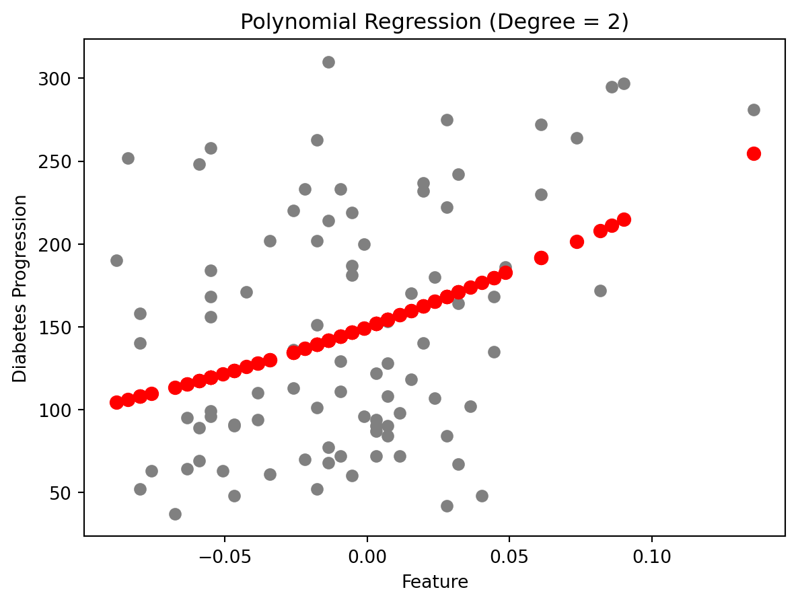

Code
import numpy as np
import matplotlib.pyplot as plt
from sklearn import datasets
from sklearn.linear_model import LinearRegression
from sklearn.model_selection import train_test_split
from sklearn.metrics import mean_squared_error, r2_scoreRegression is supervised learning algorithm, for each input has a corresponding output, and algorithms are trained to predict the output based on the input. Linear regression models the linear relationship between a dependent variable \(Y\) (response variable) and one or more independent variables \(X_i\) (predictors). It’s used to predict values within a continuous range, like housing price.
Vanilla linear regression involves only one independent variable X. The model takes the linear function:
\[ Y = \beta_0 + \beta_1X + \epsilon \]
\(\beta_0\) is the y-intercept constant
\(\beta_1\) is the slope coefficient for \(X\)
\(\epsilon\) is the error term (residuals, representing the part of \(Y\) not explained by \(X\))
Let’s use linear regression on a simple example, picking one attribute from the diabetes dataset as independent variable. The target variable is a quantitative measure of disease progression one year after baseline.
import numpy as np
import matplotlib.pyplot as plt
from sklearn import datasets
from sklearn.linear_model import LinearRegression
from sklearn.model_selection import train_test_split
from sklearn.metrics import mean_squared_error, r2_scorePerform simple linear regression and evaluate the results
# Load the diabetes dataset
diabetes = datasets.load_diabetes()
X = diabetes.data[:, np.newaxis, 9] # Use only one feature
y = diabetes.target
# Split the data into training/testing sets
X_train, X_test, y_train, y_test = train_test_split(X, y, test_size=0.2, random_state=42)
# Create linear regression object
regr = LinearRegression()
# Train the model using the training sets
regr.fit(X_train, y_train)
# Make predictions using the testing set
y_pred = regr.predict(X_test)
# The coefficients
print('Coefficients: \n', regr.coef_)
# The mean squared error
print('Mean squared error: %.2f' % mean_squared_error(y_test, y_pred))
# The coefficient of determination: 1 is perfect prediction
print('R2 Score: %.2f' % r2_score(y_test, y_pred))
# Plot outputs
plt.scatter(X_test, y_test, color='black')
plt.plot(X_test, y_pred, color='blue', linewidth=3)
plt.xlabel('Feature')
plt.ylabel('Target')
plt.title('Simple Linear Regression')
plt.show()Coefficients:
[629.85314634]
Mean squared error: 4715.16
R2 Score: 0.11
Different from linear regression, where the model is a straight line, non-linear regression have models that bend or curve. This flexibility makes it suitable for many complex real-world situations where the relationship between variables is not linear. The relationship between the dependent variable and one or more independent variables is modeled with a non-linear function. Common examples include exponential, logarithmic, and polynomial models.
Polynomial regression involves independent variable X. The model takes the linear function:
\[ y = \beta_0 + \beta_1 x + \beta_2 x^2 + \beta_3 x^3 + \cdots + \beta_n x^n + \epsilon \]
\(\beta_0\), \(\beta_1,\cdots\), \(\beta_n\) are the coefficients of the model
\(n\) is the degree of the polynomial
\(\epsilon\) is the error term (residuals, representing the part of \(Y\) not explained by \(X\))
from sklearn.preprocessing import PolynomialFeatures
# Polynomial Regression Model
degree = 2 # Degree of the polynomial
poly_features = PolynomialFeatures(degree=degree)
X_train_poly = poly_features.fit_transform(X_train)
X_test_poly = poly_features.transform(X_test)
# Linear regression model
model = LinearRegression()
model.fit(X_train_poly, y_train)
y_pred = model.predict(X_test_poly)
# Evaluation
mse = mean_squared_error(y_test, y_pred)
r2 = r2_score(y_test, y_pred)
print(f"Mean Squared Error: {mse:.2f}")
print(f"R2 Score: {r2:.2f}")
# Plotting
plt.scatter(X_test, y_test, color='gray')
plt.scatter(X_test, y_pred, color='red', linewidth=2)
plt.title('Polynomial Regression (Degree = 2)')
plt.xlabel('Feature')
plt.ylabel('Diabetes Progression')
plt.show()Mean Squared Error: 4606.71
R2 Score: 0.13
Compare to the previous linear regression model, the polynomial regression model has a lower Mean Squared Error which means better performance.
Mean Squared Error(MSE): \(\sum_{i=1}^{D}(x_i-y_i)^2\)
The smaller the Mean Squared Error, the closer you are to finding the line of best fit.
R-squared: It is a statistical measure of how close the data points are to the fitted regression line. Its value is always between 0 and 1. The closer to 1, the better the regression model fits the observations.